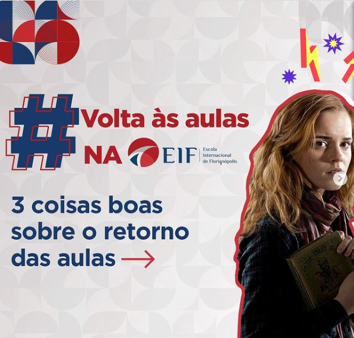
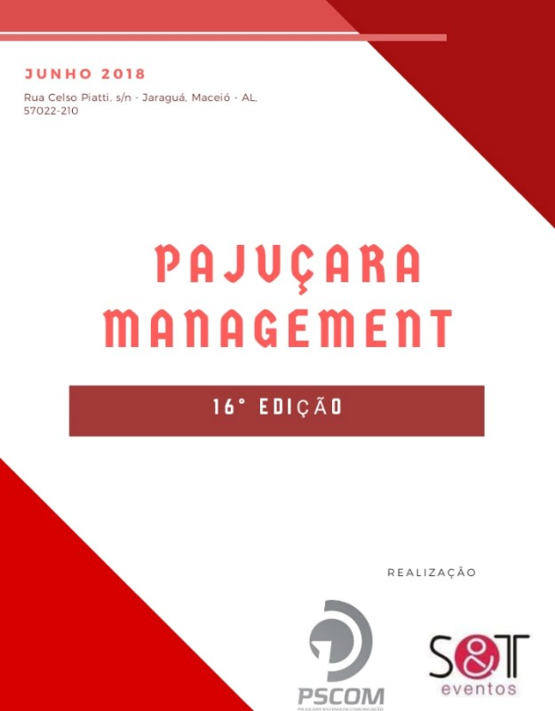
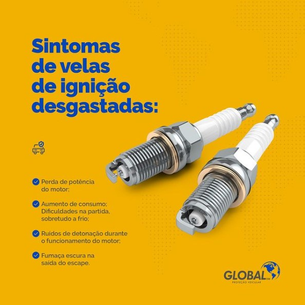
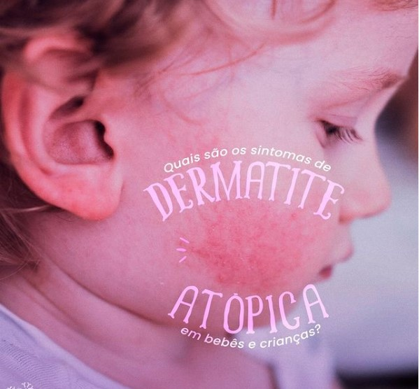
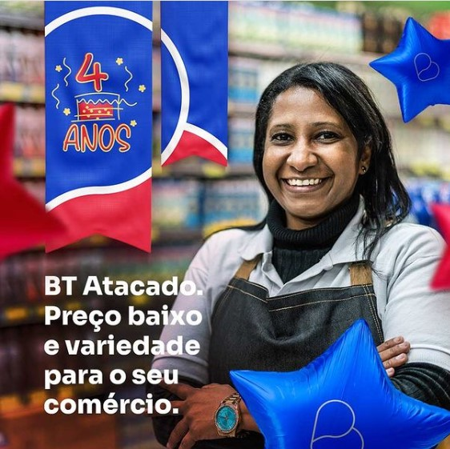

Projetos que atuei como social media, copywritter, analista de marketing, inbound e endomarketing, gestão de contas, SEO content e outros.
Instagram • 22th February 2022

Canva Create 2024: Novidades Revolucionárias para o Marketing e Design de Conteúdo Visual
O Canva Create 2024 trouxe uma série de novidades empolgantes que prometem transformar a forma como empresas e indivíduos gerenciam e criam conteúdos visuais. Vamos explorar as principais atualizações.
Estratégias Criativas para Estimular o Aprendizado na Educação Infantil
A fase inicial da educação das crianças é crucial para o desenvolvimento de suas habilidades cognitivas, emocionais e sociais. Como pais e educadores, temos a responsabilidade de criar um ambiente estimulante que promova a criatividade e a imaginação dos pequenos.
A Arte da Convivência em Condomínios: Estratégias para uma Comunidade Harmoniosa
Morar em condomínio oferece inúmeras vantagens, mas também requer um esforço conjunto para garantir uma convivência pacífica e agradável entre os vizinhos.
Google vai Substituir o Profissional de Marketing? IA do Google
Novidades do Google Ads Impulsionadas por IA. A inteligência artificial (IA) continua a moldar o futuro do marketing digital, e o Google está na vanguarda dessa transformação. Durante o Google Marketing Live 2024, a gigante da tecnologia revelou mais de 30 soluções impulsionadas por IA para a plataforma Google Ads.
Marketing Médico: Respeitando as Regras do CFM!
Mergulhar no mundo do marketing médico é como navegar em águas regulamentadas pelo Conselho Federal de Medicina (CFM). Essas regras, embora possam parecer restritivas, são na verdade âncoras que mantêm a integridade da profissão e protegem tanto os pacientes quanto os médicos. Portanto, entender e respeitar essas diretrizes é fundamental para qualquer profissional que deseje aproveitar os benefícios do marketing médico de maneira ética e eficaz.
Postagem CVC Alagoas
 18.39.10_f27dd00c.jpg)
LT Marketing
 18.38.57_31bdee55.jpg)
Pajuçara Management
EMPRESA AGRO
Vocês estão acompanhando as palestras da SIPAT, certo?
Quem participou sabe que os dias 2 e 3 foram cheios de dicas e novidades de como manter o local de trabalho mais seguro.
Agora nossa unidade de Nova Itaberaba, além de uma produção sustentável e de qualidade, também estará mais preparada com segurança.
EMPRESA AGRO - 2
Outubro Rosa, Equipe de Biguaçu apoia esta causa!
Legenda:
Agradecemos a todos os colaboradores (a) que vestiram a camisa pelo Outubro Rosa e mostraram que a causa do Câncer de Mama é uma luta de todos!
ADVOGADOS
Para: Dra Marta Beretta
Muito Obrigada pela palestra e dedicação dada neste mês tão importante de conscientização do Outubro Rosa.
Gratidão!! O nosso muito obrigado!!
Escritório Mirian Gontijo e Advogados
CLÍNICA DE SAÚDE
Mensagem de natal endereçada aos médicos:
Com o tempo descobrimos que na vida fazemos parte de duas famílias, a primeira é aquela onde crescemos, nos desenvolvemos e aprendemos, a outra é aquela composta pelas pessoas que carregam os mesmo sonhos que nós: cuidar do próximo!
Que esta época natalina contribua para a nossa evolução pessoal e profissional, nos ensinando a viver de uma forma solidária e colaborativa em prol da saúde daqueles que mais precisam e que passam pelo nosso caminho.
A Medic Imagem Diagnósticos deseja a todos os médicos um Feliz Natal e um 2023 cheio de realizações!
NUTRICIONISTA
Mensagem de natal endereçada aos pacientes:
Nesta época de Natal damos graças pelo que alcançamos, mas principalmente pelas pessoas que estiveram em nosso caminho. Obrigada por confiarem a mim a saúde de vocês, tenho certeza que o meu maior presente é vê-los com qualidade de vida.
Asseguro que me dedicarei – todos os dias – para atendê-los da melhor forma possível, meu processo de aprendizado é constante para garantir, a cada um de vocês, o melhor que a medicina pode oferecer
Nesse ano de 2023, desejo que o papai do céu esteja presente na vida de cada um e que os caminhos para um ano melhor se iluminem!
Desejo a vocês que a alegria desta data toque em seus corações e no de suas famílias, criando momentos especiais e memórias inesquecíveis.
Um feliz Natal e Boas Festas a todos!
Instagram • 20th April 2022
Instagram • 27th November 2023
Instagram • 12th May 2023
Instagram • 06th October 2023

Se tem uma coisa que não abro mão é a oportunidade de passar meu conhecimento sobre saúde para as pessoas, afinal zelar pelo bem-estar do nosso corpo e mente deve ser sempre prioridade.
E é pensando nisso que hoje estarei marcando presença no programa Mais Saúde para conversar um pouco sobre saúde mental, alergias e os cuidados com a imunidade nos tempos atuais. O programa será exibido a partir das 18h, na NTV. Convido todos vocês a assistirem!
Ver mais no Instagram